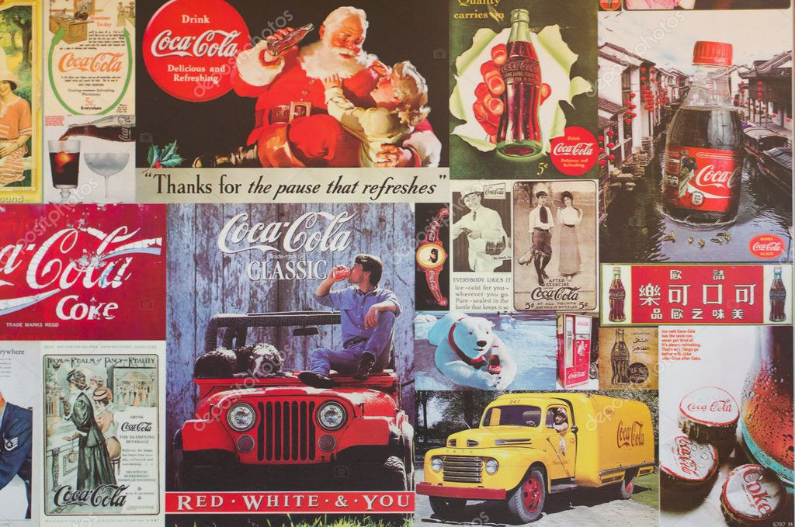

Im from Bulgaria
My country is famous as the oldest country in Europe!
Bulgaria is also famous for its naturaldiversity with mountains, plains, Black Sea Coast,
rivers, lakes
and hot springs
Greeting in Bulgaria is "Zdravei" 🇧🇬

Also Bulgarian yogurt is the most popular variety of yogurt in the world and is one of the things that make Bulgarians proud to call themselves Bulgarians; it is their exclusive invention and heritage that dates back centuries.

My favorite hobbies are
Painting

Yoga
Cooking
Paddle boarding
Outdoor activities
Spending time with my 4 legger buddy
What's your dream job?
What is my dream job? How do I recognize it? Personal satisfaction is the number one thing you should consider before making any career decision. You only live once and you don’t want to spend a lifetime doing something you were forced to do. Something that drains you and leaves you with no motivation to enjoy other aspects of life such as relationships and personal development. You want a job that satisfies you. According to Steve Jobs on this article by Forbes, a job that “makes you go to bed every night saying you’ve done something wonderful”. Now that’s a dream job! Still wondering what is your dream job? Take a dream job quiz and find out.
Where do you live?
I live in the state of Georgia. Famous as number-one producer of peanuts, pecans, and vidalia onions, known as the sweetest onions in the world, can only been grown in the fields around Vidalia and Glennville. Another sweet treat from the Peach State is Coca-Cola, which was invented in Atlanta in 1886.
Why do you want to be a web developer?
This is a wonderful profession and everything you learn stays always up in our heads and with us till eternity. One doesn’t need to carry heavy tools your skill is always with you, it goes with you wherever you walk with just free bare hands. Freedom, freedom, peace of mind , independent….